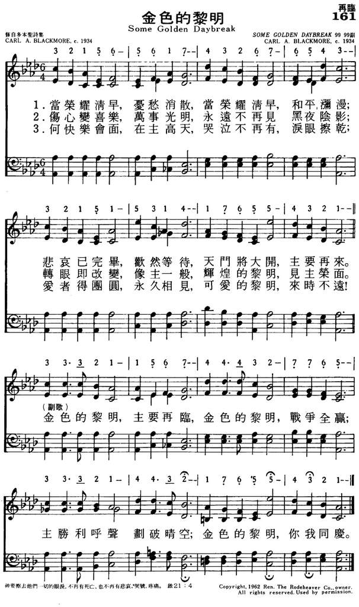

The
return of Christ and heaven has always been a major topic of hymns. If you
look at many hymns you will find that the final verse often takes up this
theme and the hymn ends with a message of hope for the future. And many
hymns, like this week's choice, expand the theme and hope that Christians
have in the midst of the turmoil of daily life here on earth. I admit that I
really miss that message in most of today's music – maybe it is my age or
maybe it is my recent experiences, but thinking about and singing about the
second coming comforts my heart as it has done for many over the years.
While preaching on the radio on the subject of the second coming of
Christ, the Rev. C.A. Blackmore was outlining some of the marvelous things
that would happen to Christians at the rapture.
A lady who had been bedridden for twenty-three years heard the message and
wrote, "Will I really be well? Will all pain and sorrow actually be gone?"
Blackmore replied: "Yes, my friend, some glorious day, when Jesus comes, you
will leap from that bed with all the vigor of youth and never know pain
again." Blackmore's son, Carl, was greatly impressed with the reality of
this coming event. As he pondered the glorious prospects, the words and
melody of a chorus took form in his mind, and he said to his father: "Dad,
you should write some verses for this chorus." After much prayer, early one
morning, unable to sleep as he anticipated the thrill of the rapture, the
elder Blackmore rose from his bed and wrote the verses of "Some Golden
Daybreak." As the song became known, it grew in popularity. But,
unfortunately I haven't heard it sung in public for many years. Think about
the hope in the words of this week's choice.
|
|
|
|
Some Glorious Morning Sorrow Will Cease,
Some Golden Daybreak, Jesus Will Come;
Sad Hearts Will Gladden, All Shall Be Bright,
Oh, What A Meeting, There In The Skies,
|
161金色的黎明
1.当荣耀清早,忧愁消散,当荣耀清早,和平弥漫；
悲哀已完毕,欢然等待,天门将大开,主要再来。 金色的黎明,主要再临,金色的黎明,战争全赢； 主胜利呼声划破晴空;金色的黎明,你我同庆。 2.伤心变喜乐，万事光明；永远不再见，黑夜阴影； 转眼即改变，象主一般，辉煌的黎明，见主荣面。 金色的黎明,主要再临,金色的黎明,战争全赢； 主胜利呼声划破晴空;金色的黎明,你我同庆。 3、何快乐会面，在主高天；哭泣不再有，泪眼擦干； 爱者得团园，永久想见，可爱的黎明，来时不远。 金色的黎明,主要再临,金色的黎明,战争全赢； 主胜利呼声划破晴空;金色的黎明,你我同庆。 |
|
https://www.mred365.cn/szxg/7164.html
 https://hymnary.org/hymn/EH1956/page/170
|
|
|
|
|

金色的黎明 SOME GOLDEN DAYBREAK 219 https://www.youtube.com/watch?v=pb_5P3GMgOQ -
Some Golden Daybreak · The Calvary Quartet
https://www.youtube.com/watch?v=Wme2XJ1YvbA
LX1830
Some Golden Daybreak
161金色的黎明
| Text: | Some Golden Daybreak |
| Author: | C. A. Blackmore |
| Tune: | [Some glorious morning sorrow will cease] |
| Composer: | Carl Blackmore |
| Short Name: | Carl A. Blackmore |
| Full Name: | Blackmore, Carl A., 1904-1965 |
| Birth Year: | 1904 |
| Death Year: | 1965 |
{kind=link}